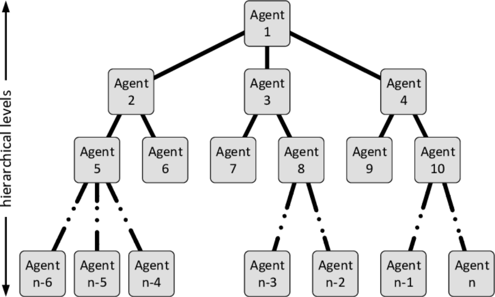
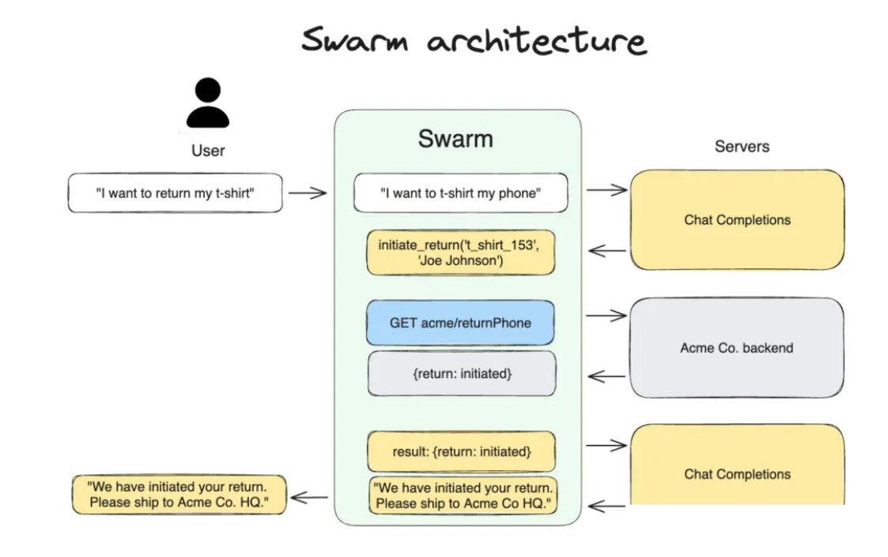

Multi-Agent 架构
在 Multi-Agent 系统中，多个 Agent 需要通过一定的结构组织起来，才能高效协作完成任务。如果没 有清晰的架构设计，多个 Agent 之间很容易出现职责重叠、通信混乱或者任务冲突的问题。因此，在 构建 Multi-Agent 系统时，首先需要确定整体架构模式。 从工程实践来看，当前 Multi-Agent 系统主要有两种典型架构模式：Hierarchical Agent（层级式架 构） 和 Swarm Agent（群体式架构）。这两种架构在任务组织方式、Agent 协作模式以及系统复杂 度方面存在明显差异，适用于不同类型的任务场景。
Hierarchical Agent
Hierarchical Agent，也称为层级式 Multi-Agent 架构，是目前工程实践中最常见的一种设计模式。在 这种架构中，系统通常存在一个“上层 Agent”，负责整体任务规划与调度，而多个“下层 Agent”负 责执行具体任务。

在这种结构中，Agent 之间形成一种类似组织管理的层级关系。例如，一个 Planner Agent 负责将复 杂任务拆解为多个子任务，然后将这些子任务分配给不同的 Worker Agent。每个 Worker Agent 完成 自己的任务后，再将结果返回给 Planner Agent，最终由 Planner Agent 汇总结果并生成最终输出。 这种架构的优势在于结构清晰、控制能力强。由于任务分配由上层 Agent 统一管理，系统可以有效避 免任务冲突，并且能够更好地控制整体推理流程。此外，在工程实现上也相对简单，因为系统只需要
实现一套明确的任务调度逻辑。
层级式架构特别适合处理具有明确流程结构的任务。例如软件开发、复杂数据分析或者自动化工作流 等场景。在这些任务中，通常需要先进行整体规划，然后逐步执行各个子步骤，因此非常适合采用层 级式 Multi-Agent 结构。 然而，这种架构也存在一定局限性。如果 Planner Agent 设计不合理，系统可能会形成“单点瓶 颈”，所有任务都需要通过 Planner 进行调度，从而影响系统效率。
Swarm Agent
Swarm Agent，也称为群体式 Multi-Agent 架构，其设计灵感来源于自然界中的群体行为，例如蚁 群、蜂群或者鸟群的协作方式。在这种架构中，系统没有明显的中心控制节点，而是由多个 Agent 以 相对平等的方式进行协作。

每一个 Agent 都可以根据当前任务状态自主决定自己的行动，并通过与其他 Agent 的通信不断调整策 略。Agent 之间通常通过共享信息或者广播消息来协调行为，而不是通过一个中心节点进行统一调 度。
这种架构的最大特点是高度分布式。多个 Agent 可以同时进行推理和行动，从而形成一种“集体智 能”。在一些复杂问题中，这种模式能够探索更多可能的解决方案，并提高系统的灵活性。
Swarm 架构特别适合开放性任务，例如头脑风暴、复杂问题探索或者创意生成。在这些场景中，多个 Agent 可以从不同角度进行思考，并不断互相启发，从而产生更丰富的结果。
不过，Swarm 架构在工程实现上通常更复杂。由于缺乏中心控制，系统需要设计更加完善的通信机制 和协作规则，否则很容易出现信息混乱或者任务重复的问题。
架构选择
在实际系统设计中，开发者需要根据任务特点选择合适的 Multi-Agent 架构。 如果任务具有明确流程、需要严格控制执行顺序，通常更适合采用 Hierarchical 架构。例如自动化工 作流系统、企业业务流程系统以及复杂数据处理任务。
如果任务更加开放、需要多个 Agent 共同探索解决方案，则 Swarm 架构可能更适合。例如创意生成、 研究辅助以及复杂问题讨论等场景。
在一些大型系统中，还可能同时结合两种架构。例如使用 Hierarchical 架构进行整体任务管理，而在 某些子任务中使用 Swarm Agent 进行协作推理。
通过合理设计 Multi-Agent 架构，可以显著提高系统的任务处理能力，并使多个 Agent 能够高效协作 完成复杂目标。